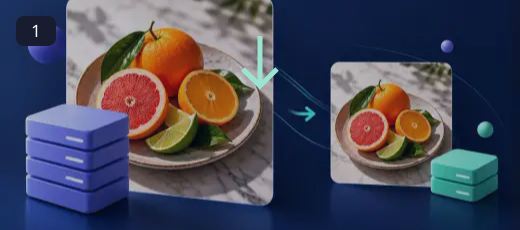
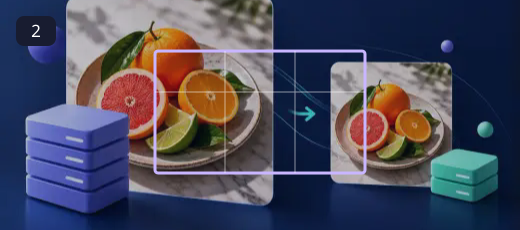
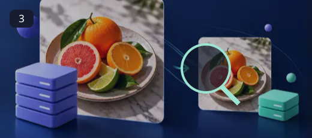
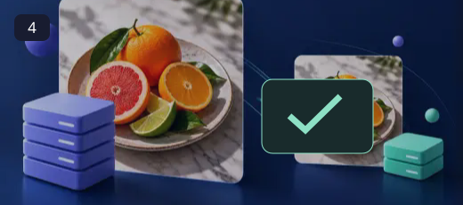

Image Compressor
Keep the detail people notice. Reduce the bytes they have to wait for.
Smaller images can make a page feel quicker and a message easier to send. The right compression setting depends on the subject: fine lettering needs different care from a soft background. Compare the result instead of choosing the lowest quality by habit.
How to use Image Compressor ↓How to use Image Compressor

Select an image
Choose a JPG, PNG or WebP image supported by the tool.

Choose an output format
Pick WebP, JPEG or PNG depending on the quality and compatibility you need.

Adjust quality
Move the quality control and compare the expected result. PNG exports do not use the quality slider.

Compress and save
Run compression, check the output and download the smaller file.
Choose the format for the job
WebP is useful for many web images, JPEG suits photographs with broad compatibility, and PNG can preserve sharp graphics or transparency. A quality slider affects supported lossy formats, not PNG. An already optimized file may not get smaller, so keep whichever version best balances appearance and size.
- Make images lighter for websites and sharing.
- Choose between common output formats.
- Tune quality rather than blindly shrinking every image.
WebP often offers a useful size/quality balance for websites. Use PNG when you need lossless output or transparency, and JPEG for broadly compatible photographic images. Compare the result before replacing the original.
Questions, answered
Will every image become smaller?
Not always. Already-optimized images or lossless formats may not shrink much. Some formats can even produce a larger file.
Does PNG use the quality slider?
No. PNG is lossless, so the quality slider does not apply.
Are files uploaded?
The compression itself runs locally in your browser.
Will this replace my original file?
The tools create a separate output. Keep the original until you have checked the exported file; the site does not provide cloud project backups.
Can I publish the result?
Use source media you own or have permission to edit. Check the destination’s requirements and the rights of anyone shown before publishing.